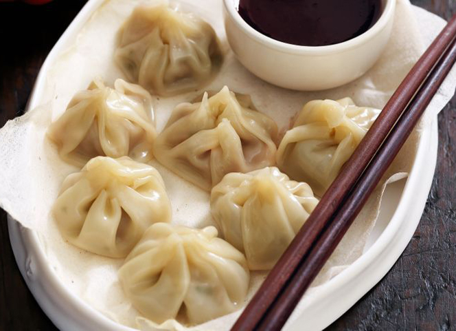
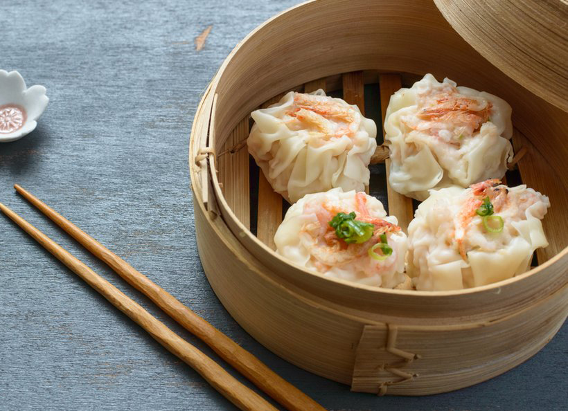
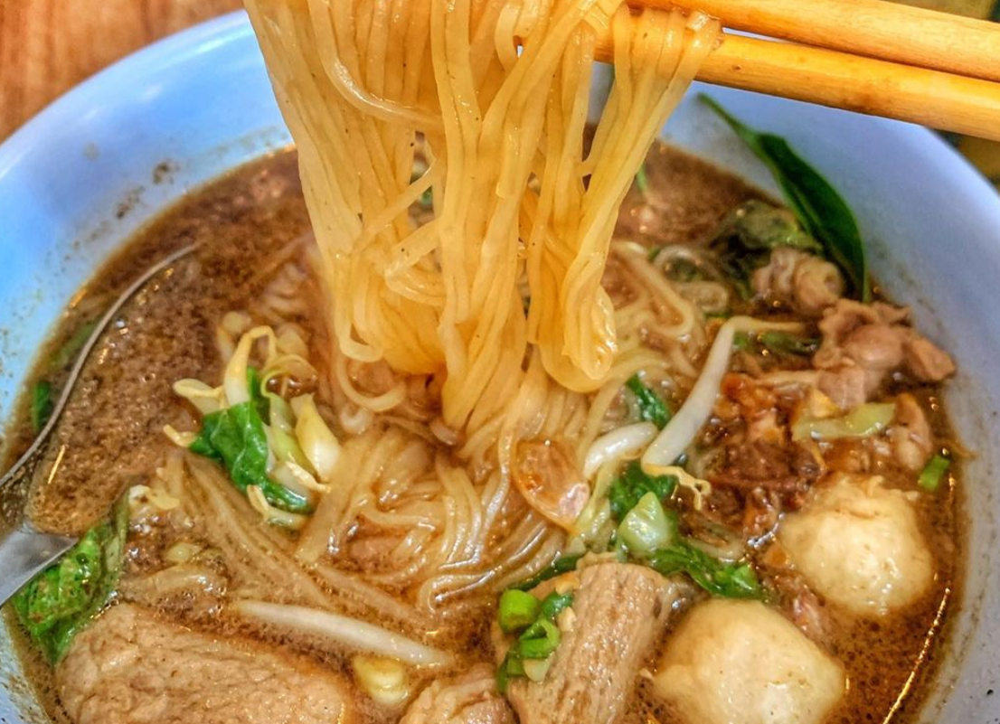
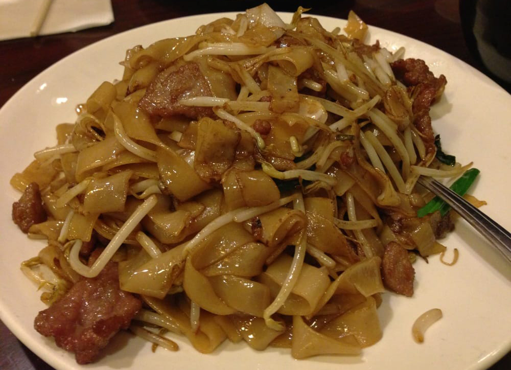
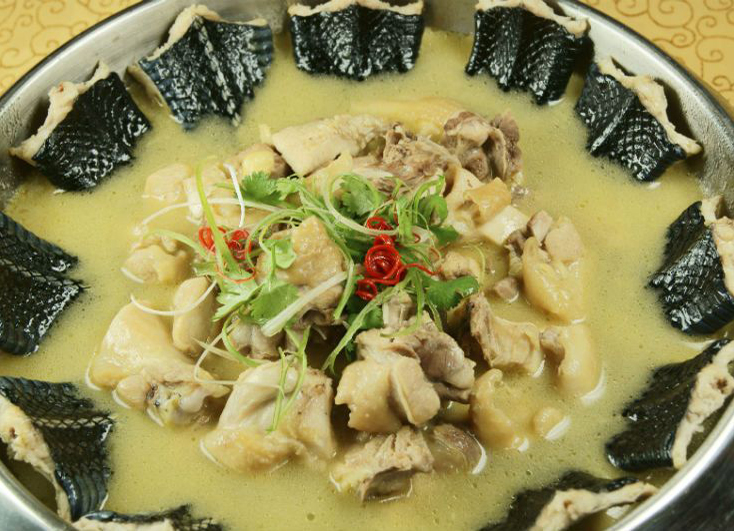
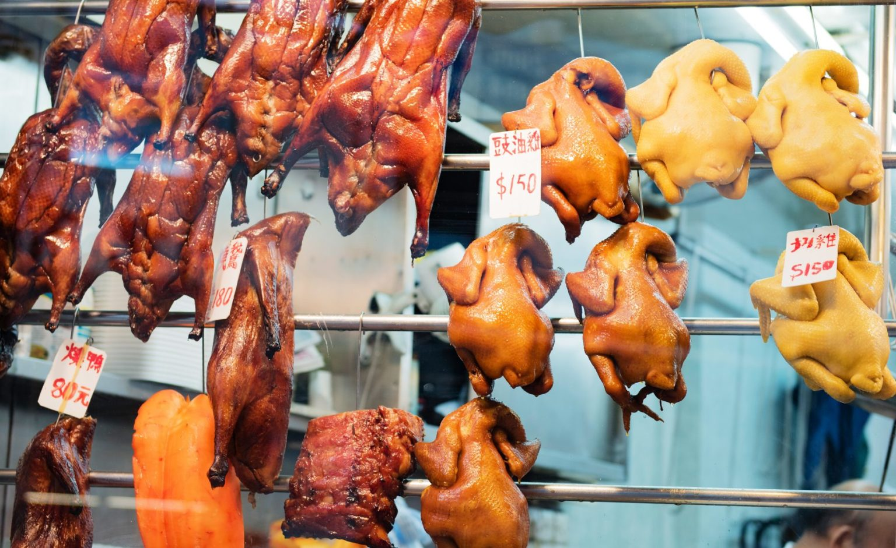
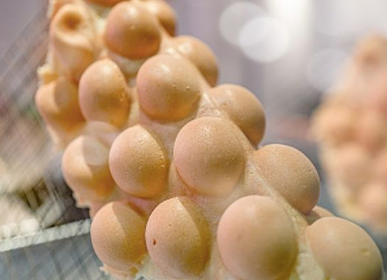

-
Fairwood
Сеть ресторанов быстрого питания, предлагающая блюда китайской и западной кухни
-

Cafe de Coral
Сеть ресторанов быстрого питания, в которых подают блюда китайской и западной кухни по бюджетной цене.
-

Вонтоны
Вонтоны — разновидность пельменей в китайской кухне. (кантонская кухня)
-

Димсам
В переводе с китайского димсам означает "сердечно тронуть", "заказать для сердца". Это легкие китайские блюда, которые в местной традиции чаепития подают вместе с чаем, например, сорта пуэр. Как правило, димсамы заказывают до обеда.
-

Лодочная лапша
Лодочная лапша (dai pai dong) — это национальное блюдо Гонконга, которое славится своей уникальной кулинарией. Оно представляет собой сочетание морепродуктов, мясных и овощных ингредиентов, в сочетании с пальчиками-веерками. Лучшим местом, где вы можете попробовать этот деликатес, являются уличные рестораны, которые можно найти по всей территории города.
*вариант где попробовать https://maps.app.goo.gl/gKW3b5t56ygehsQk8 -

Чоу-фан
Чоу-фан — это одно из самых универсальных блюд в Гонконге, которое можно съесть на завтрак, обед или ужин. Это вареный в рисовом бульоне рис с различными добавками, такими как морепродукты, курица, овощи и т.д. Обычно эти блюда подаются в керамической посуде.
Особо вкусным вариантом считают 干炒牛河 (есть во многих заведениях) *вариант где попробовать https://maps.app.goo.gl/Z2beN3ThSm5Da4Xq8 -

Суп из змеи 蛇羹
Одним из самых экзотических блюд Гонконга является суп из змеи. Суп делают из древесной змеи, которую тщательно маринуют и варят вместе с куриной грудкой. Это блюдо имеет уникальный вкус и является настоящей деликатесом.
*вариант где попробовать https://maps.app.goo.gl/RZyA54vZS3T4ewPj8 -

Сиу Мэй (жареное мясо) 燒味
Вы должны это попробовать! В далеком кантонском мире нет другого места, где жареное мясо было бы приготовлено в совершенстве.
Свинина барбекю (cha siu) — сочные куски свинины, обмазанные соусом из специй, вина, мальтозы и соевого соуса, запеченные в цилиндрической печи до карамелизации мальтозы.
Жареная свинина (siu yuk) — целая свинина, зажаренная на вертеле на открытом огне, с пухлой хрустящей корочкой, хруст которой вы будете слышать при каждом укусе.
Молочный поросенок (yu zhu) — нежнейшее мясо, увенчанное тонкой, невероятно хрустящей корочкой, которая бьется как стекло.
Жареный гусь (siu ngo) — обжаривается до бронзовой и хрустящей кожи, приправляется ароматной смесью из пяти специй и вина и подается со сладким, терпким сливовым соусом.
*вариант где попробовать https://maps.app.goo.gl/dTMYRsG7RXLXJ4499 https://maps.app.goo.gl/964agWe2tUoeKP5EA -

Гонконгские вафли
Разновидность вафель, популярная в Гонконге и Макао. Это мягкие вафли, которые готовятся из яичного дрожжевого теста.
*вариант где попробовать https://maps.app.goo.gl/ozy59ryUwaMVYuxx7